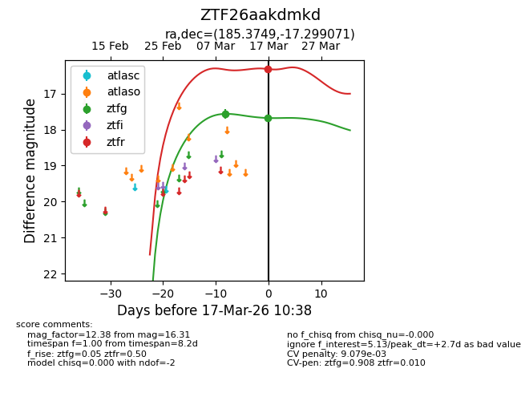
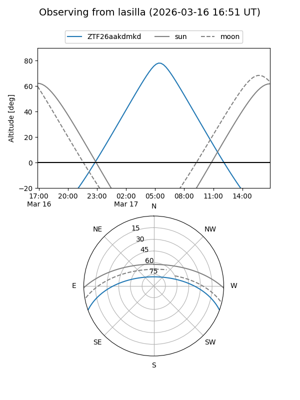
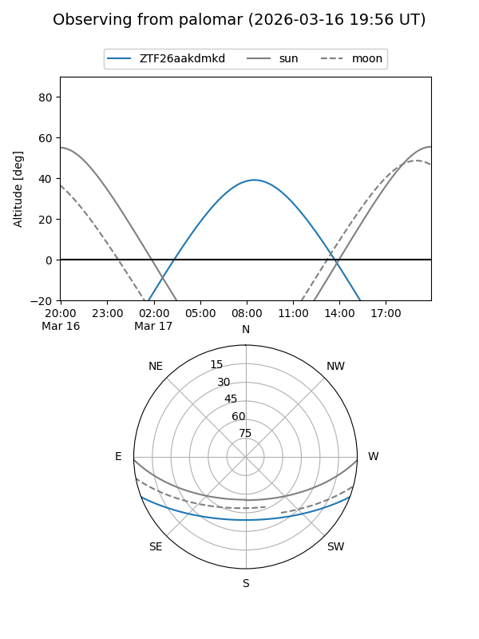
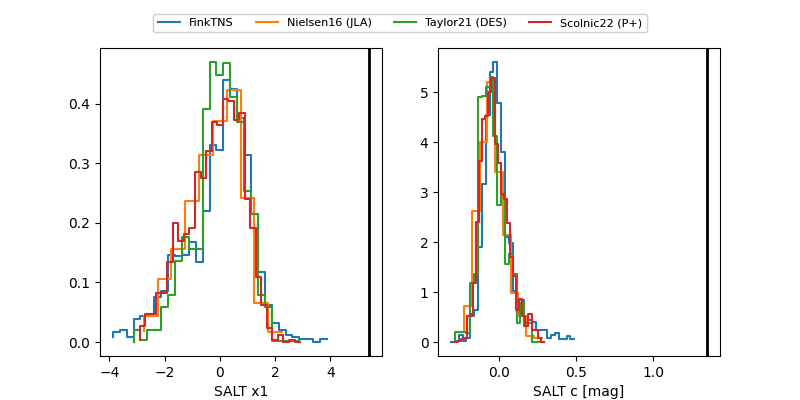

ZTF26aakdmkd
Target ZTF26aakdmkd at 2026-03-17 10:40
Aliases and brokers:
FINK: link
Lasair: link
ALeRCE: link
alt names
ZTF26aakdmkd (ztf,fink_ztf)
Coordinates:
equatorial (ra, dec) = 185.3749,-17.29907
equatorial (HMS+DMS) = 12:21:29.98,-17:17:56.66
galactic (l, b) = (292.8050,+44.98319)
Flags:
likely cv
Photometry:
last ztfg=17.68, ztfr=16.31
2 ztfg, 1 ztfr detections
Lightcurve

Visibility


Additional plots
